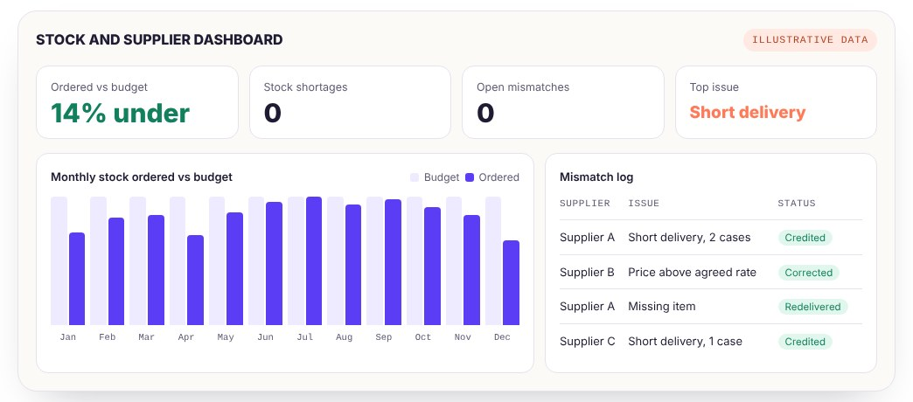

01
The results
14%less stock ordered against budget
0stock shortages while ordering less
64supplier mismatches traced to the cause, 100% resolved
~10new starters trained on the process
02
What could go wrong at every delivery
Over orderCash on the shelf
Order more than the season needs and money sits in stock.
Under orderLost sales
Run out of best sellers in a busy week and customers walk away.
Short deliveryPaying for nothing
Short or missing items were the most common mismatch.
03
How the process ran
- 01Plan the order by season: student term times and summer.
- 02Place the order against the budget, best sellers first.
- 03Check line by line: right item, right quantity, right price.
- 04Match the invoice against point of sale, inventory and CRM records.
- 05Close the gap: trace the cause and resolve it with the supplier, then update the KPI tracker.
04
One screen to track it

Headline results are real; the monthly figures and log entries are illustrative.
05
What I’d change next
How it ran
- Every line checked by hand
- Each mismatch chased one at a time
- Accurate, but manual
Proposed redesign
- A matching sheet that flags any gap automatically
- A supplier scorecard for supplier reviews
- Reorder levels that rise ahead of term time and summer
Proposals for the future, not changes made at the time.